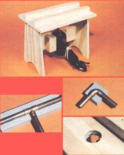

Not too many years ago there was only one reason why anyone would go to the trouble-and expense-of insulating his or her home's water pipes: to keep them from freezing. But, as the cost of thermal energy has ballooned, there's been a real increase in public interest in conservation measures . . . and one of the "newly discovered" ways to save a little energy and money is to install pipe insulation.
On first thought, the benefit of insulating hot water lines (aside from the fact that doing so can prevent an unfortunate chill-induced rupture) would seem, to be simply in keeping the BTU-which have been produced at considerable expense by your water heater-inside the pipes. There are, however, a couple of other pluses that should be considered. First, if the water in the pipes stays hot, there will be less lag time between turning on the tap and the arrival of hot liquid . . . so both heat and water are saved in the process. And there's another advantage to keeping the warmth inside the lines: :During the torrid summer months, hot pipes can add to the misery by pouring additional warmth into an already uncomfortable home.
Pipe insulation (not to be confused with the electric conduit heaters often used to prevent freeze-up) has actually gotten its biggest boost from the pioneers of the solar hot water movement. No device that depends upon the sun for its heat can afford to give up warmth through its delivery lines. (After all, when you're relying on a collector, you can't compensate for poor insulation by merely turning up the thermostat.)
Unhappily, though, effective insulation that will fit snugly around a pipe hasn't been easy to make or inexpensive: Prefabricated tubing protectors now run between 30 cents and $2.60 per foot. And, with costs that high, insulating the waterlines might not be the first item on an energy saver's checklist.
On the other hand, if folks could prepare their own pipe "sleeves" from relatively inexpensive material, the prospect might look a lot more enticing. In fact, when the search for an economical insulator for solar collector outlets led MOTHER's research staffers to the discovery of the method of making tubing wrappers presented here, they were a little surprised to find that the material can be produced so inexpensively. At a scant 110 per foot (based on a local price of $10.60 for a 4' X 8' sheet of 1" polystyrene insulation), our do-it-yourself technique produces pipe wrapping at just about a third the price of its least expensive ready-made competition.
The heart of our easy insulation-maker consists of a 160-watt soldering gun fitted with a special tip. We took the hard spring steel core from a broken choke cable, trimmed off a four-inch length, bent the wire into a semicircle with a 3/4" diameter (a size appropriate for 1/2" copper tubing), and then replaced the solderer's standard tip with this special-duty unit.
The 1100°F temperatures produced in the wire readily shape polystyrene by melting the material. (In fact, soldering guns are often used for slicing plastics such as synthetic ropes . . . see "Rope Know-How" on page 40.) A person with a steady hand could carve the 3/8"-deep grooves in flat polystyrene by hand, but we decided to simplify the procedure by building a jig that holds the gun securely and guides 2"-wide pieces of insulation past its hot tip.
The stool-like affair that you see in the accompanying photo secures the heater in a position suitable for producing a 3/8"-deep channel. (By only temporarily wedging the tool in place with a wooden block, you'll have the option of removing it, easily, when the gun is to be used for other jobs.) The rubber band, which you see wrapped around the handle, holds the solderer's trigger down for long cuts.
To form the bends necessary to accommodate elbows, tees, and the irregular turns commonly formed when working with soft copper pipe, a little hand work will be needed. We found it relatively easy, though-after experimenting on a few pieces-to make smooth, consistent grooves for the short distances required for such angles and curves.
Once a batch of grooved polystyrene has been prepared, two sections are sandwiched around the pipes that are to be insulated. Tape could be used to secure them, but we've found that the adhesive designed for use with polystyrene is actually easier to apply. The Rvalue that will result from the approximately 3/8"-thick insulative layer provided by MOM's tube wrappers is between 3 and 4. Furthermore, it's easy to apply additional layers of ungrooved material atop the molded pieces to increase the thermal resistance. And, by employing such a technique, you can achieve an R-value equal to the best pipe insulation on the market . . . for about 1/6 the cost!
|
 ABOVE: The bench serves two purposes: It holds the soldering gun in place /with a wedge to allow for easy removal), and its channel guides the polystyrene past the gun's hot tip. RIGHT: We shaped this piece of insulation for a 90? elbow completely by hand. BELOW: To obtain a tee molding, make a straight cut, then hand-form the leg. BELOW, RIGHT: The working part of thegroover |
|
|